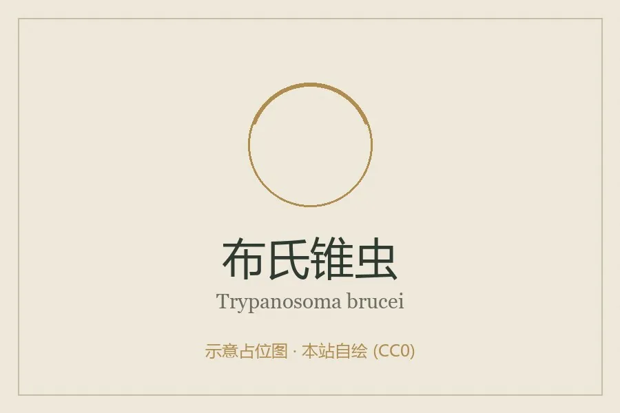

其他无脊椎动物 · 动物界
布氏锥虫 Trypanosoma brucei

由舌蝇叮咬传播的血液鞭毛虫，侵入中枢神经后引起非洲睡眠病，流行于撒哈拉以南非洲，防蝇是关键。
- 分类
- 门眼虫门纲动质体纲目锥虫目科锥虫科属锥虫属
- 栖息环境
- 人畜的血液、淋巴与中枢神经系统，媒介为非洲舌蝇
- 地理分布
- 撒哈拉以南非洲的稀树草原与河岸林区
- 保护级别
- 无保护问题；为非洲睡眠病病原，防控靠防蝇与早期诊治
物种志
布氏锥虫是一种寄生于血液和淋巴的鞭毛虫，虫体细长呈纺锤形，长约十五至三十微米，有一根鞭毛沿着体表延伸形成波动膜，运动时像一片飘动的薄膜。它的体表覆盖着一层由变异表面糖蛋白组成的包被，能不断更换，从而躲避免疫系统的识别，这也是它能在宿主体内长期存活的原因。
它分布于撒哈拉以南非洲的稀树草原和河岸林区，传播媒介是舌蝇。感染途径是舌蝇叮咬：蝇在吸食人畜血液时把锥虫注入新宿主，锥虫先在血液和淋巴中繁殖，引起发热、头痛、淋巴结肿大，随后侵入中枢神经系统，造成睡眠紊乱、行为异常、昏迷，因此被称为睡眠病；牲畜感染后表现为消瘦、贫血，称为那加那病。在灌丛、河谷和野生动物聚集区活动的人群风险较高。防护的关键是穿长袖长裤、使用驱虫剂、避开舌蝇活跃的河岸灌丛，必要时进行药物预防；诊断依靠血涂片和淋巴结穿刺，治疗需在医生指导下使用特效药物。目前尚无有效疫苗。
形态与习性
- 虫体细长纺锤形，长十五至三十微米
- 运动鞭毛沿体表形成波动膜
- 免疫逃避不断更换体表糖蛋白包被
- 感染途径舌蝇叮咬，随蝇唾液注入人体
- 症状发热、淋巴结肿大，后期睡眠紊乱与昏迷
- 防护穿长袖、用驱虫剂、避开河岸灌丛
趣味知识
- 它不停更换身上的糖蛋白外衣，让抗体总是慢一步。
- 它先住在血液里，最后钻进大脑，让人白天嗜睡、夜里失眠。
- 防住舌蝇，就切断了它几乎唯一的传播途径。